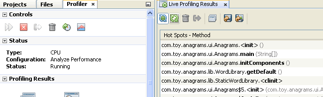
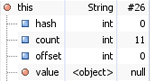
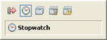
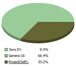
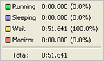

Для перехода к полноэкранному предварительному просмотру щелкните изображение
Профилировщик NetBeans предоставляет техническую поддержку для оптимизации быстродействия и использования памяти приложений, а также упрощает создание надежных масштабируемых приложений Java SE, JavaFX и Java EE.
Обеспечивает возможность выбора из нескольких общих задач профилирования, таких как стандартное профилирование ЦП или памяти, либо простого наблюдения. Варианты выбора содержат стандартные значения, предварительно установленные техническими специалистами; кроме того, пользователи могут самостоятельно устанавливать параметры для конкретного приложения.
Разработчик контролирует объем предполагаемой средством профилирования нагрузки. Это позволяет анализировать приложение, когда оно запущено практически на полной скорости. Данные анализа можно сохранять для дальнейшей обработки: сохраняйте и экспортируйте снимки собранных результатов в виде файлов CSV, HTML или XML.
HeapWalkerHeapWalker позволяет выполнять анализ содержимого кучи Java и идентифицировать неиспользуемые ссылки, являющиеся причиной утечки памяти. Имеется возможность просмотра классов и экземпляров классов в куче, полей каждого экземпляра или класса, а также ссылок на каждый экземпляр. Применяйте совместимые с jHat запросы OQL для анализа содержимого дампа памяти. Используйте основные функции подсветки и автозавершение кода для OQL. |
 |
Точки профилированияУстановка точек профилирования в исходном коде позволяет оптимизировать управление сбором результатов (аналогично точкам останова отладчика). Точки профилирования указывают на автоматически инициируемые действия при выполнении определенных условий, например при исполнении строки программы, истечении времени или использовании памяти. С помощью точек профилирования можно инициировать дампы кучи, выполнять сброс накопленных результатов или запускать сценарий генератора нагрузки, а также делать снимок результатов. |
 |
Выявление узких мест, связанных с ЦПМожно настроить средство профилирования NetBeans для создания отчетов только по определенным методам, либо для приложения в целом. Схема предоставляет точную информацию относительно времени ЦП. Щелкнув фрагмент схемы, можно выполнить детализацию от высокоуровневых категорий к более подробной информации. Можно выполнить профилирование для всего приложения или его части в условиях реальной рабочей нагрузки. Кроме того, при помощи сценариев JMeter можно произвести нагрузочное тестирование в начале сеанса профилирования. Отслеживание использования памятиПозволяет точно определить объекты, вызывающие утечку памяти, на основе определенного шаблона распределения и "сборки мусора", либо выявить недостаток памяти. Профилирование жизнеспособности объектов позволяет отслеживать и события "сборки мусора", и события создания объектов. Пользователь получает информацию о количестве, времени существования, путях распределения и других текущих характеристиках объектов в памяти, а также возможность сравнения снимков памяти. |
 |
Наблюдение за состоянием потоков выполненияНа графике "Шкала времени потока" средства профилирования NetBeans представлены сведения о текущем и предыдущем состоянии всех потоков выполнения в приложении. На графике "Подробные сведения о потоке" представлена подробные сведения об одном или нескольких выбранных потоках выполнения, включая список всех изменений состояния за время жизни потока. Удаленное профилированиеПрофилирование приложения, запущенного в другой системе, отличной от IDE NetBeans. Установка пакета средства удаленного профилирования в удаленной системе позволяет выполнять профилирование запускаемых в этой системе приложений. Подключение средства профилированияМожно подключить средство профилирования к любому приложению Java, даже если запуск этого приложения осуществляется вне среды IDE. Если приложение Java и система IDE функционируют с использованием JDK 6, существует возможность динамического подключения средства профилирования для профилирования уже выполняемого приложения. |
 |
{kind=link}